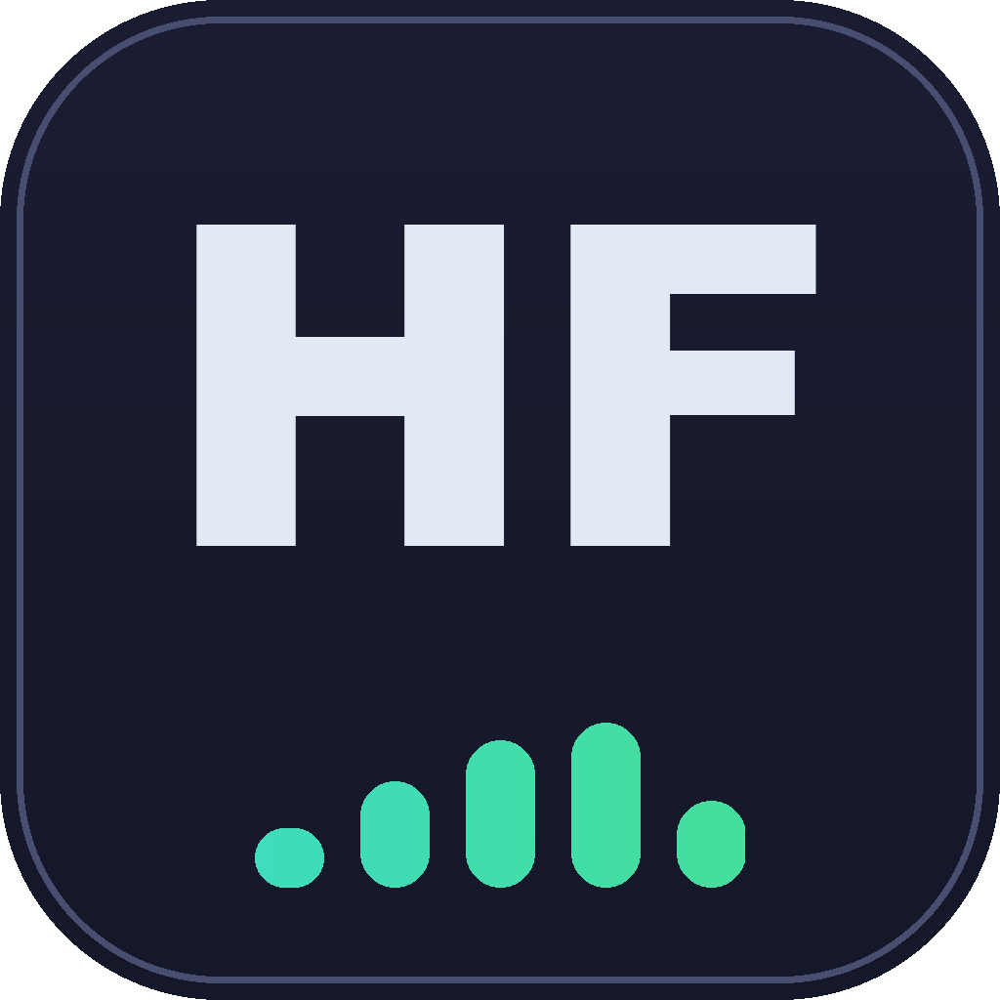
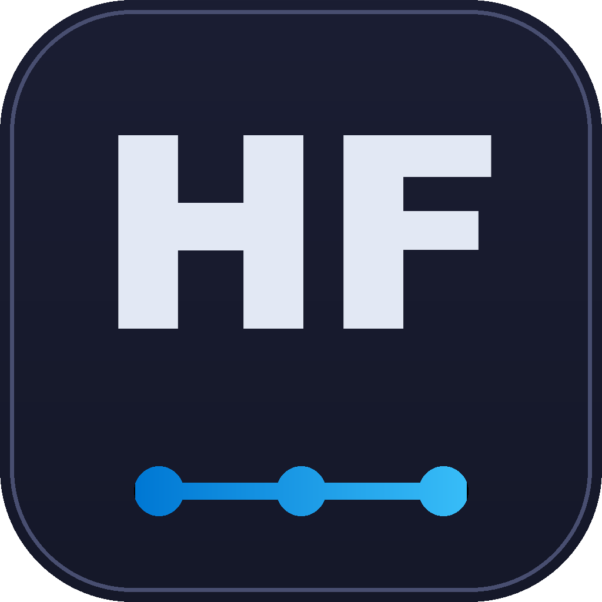
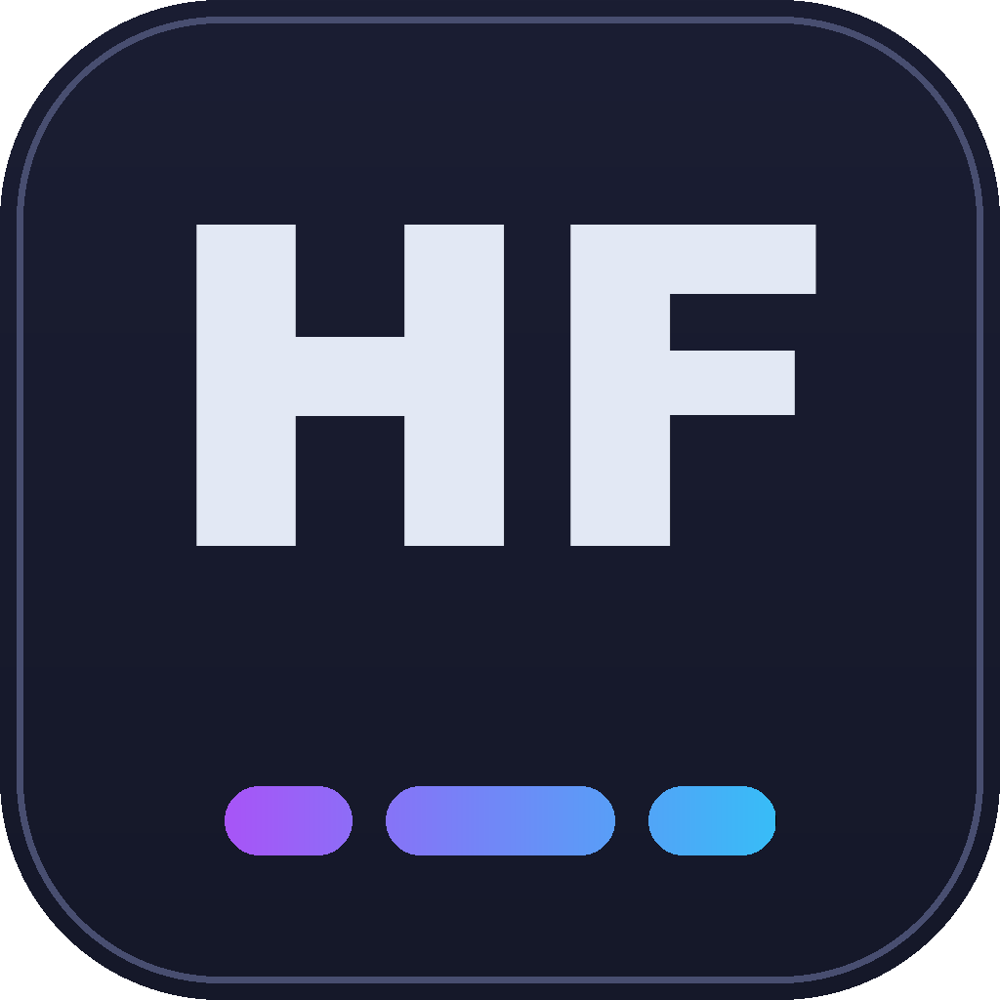
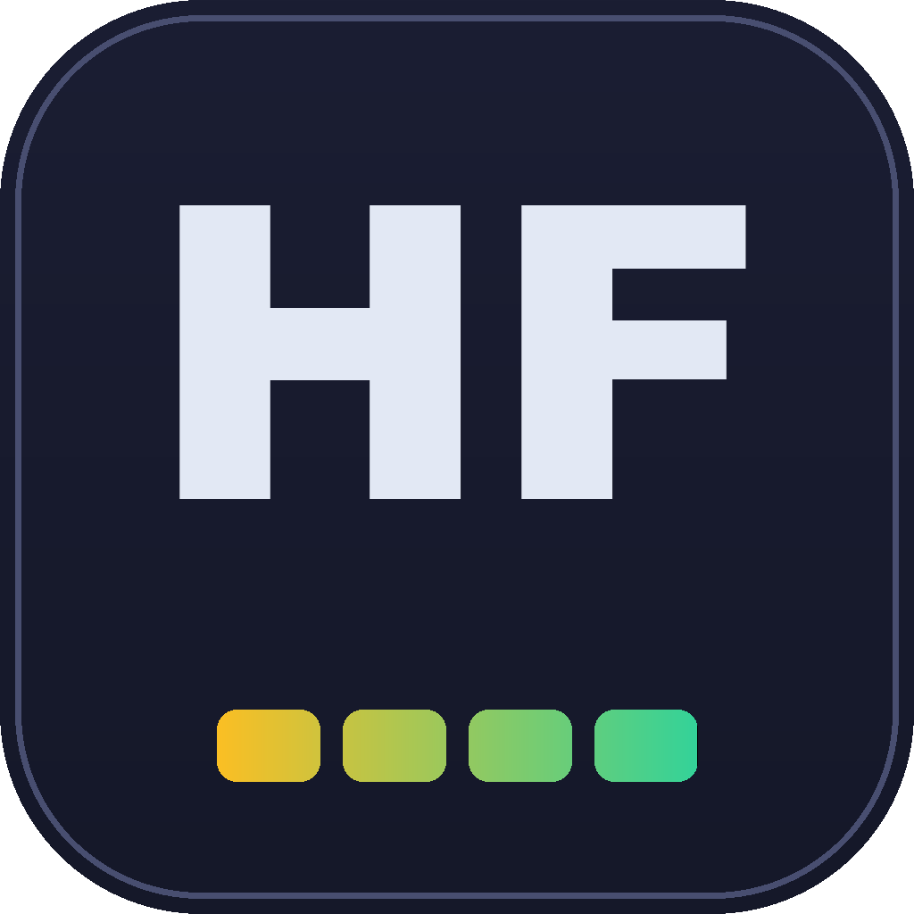

Designed in the uniform SystemInfo / Quick Scaler / Dupe Check family style (deep navy squircle, periwinkle inset, off-white monogram).

5-bar telemetry equalizer in signature teal-to-green. Direct match with SystemInfo & Quick Scaler.

3-node network data bridge in Fluent Blue to Cyan (#0078d4 to #38bdf8). Represents Hugging Face Hub connectivity.

3-capsule accelerator track in electric purple to cyan (#a855f7 to #38bdf8). Represents deep reasoning models & tensor speed.

4-block quantized matrix array in warm amber/gold to emerald (#fbbf24 to #34d399). Represents GGUF/FP8 local model serving.